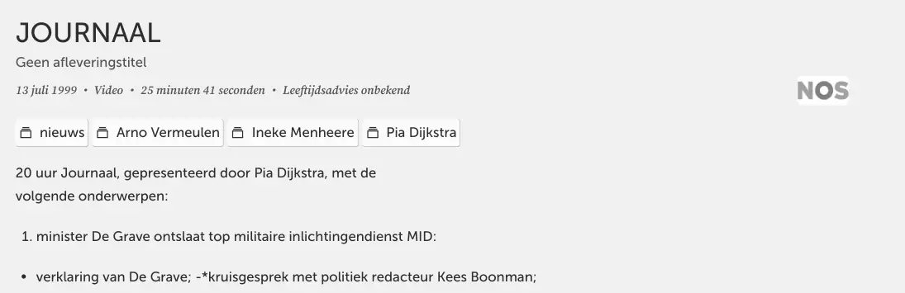

Beweisstück · Video
NOS Journaal, 13. Juli 1999
Die Passage
„20-Uhr-Journaal, moderiert von Pia Dijkstra, mit folgenden Themen: Minister De Grave entlässt Spitze des militärischen Nachrichtendienstes MID: Erklärung von De Grave; -*Kollegengespräch mit Politikredakteur Kees Boonman; […]“ Die Beschreibung der Sendung auf der Archivseite in De Schatkamer, bis einschließlich des ersten der zwölf Themen. Die Zeichen „-*“ sind Formatierungsreste in der Archivbeschreibung und wurden hier belassen, wie sie stehen. Aus dem Niederländischen übersetzt; der Originaltext steht unten.
Originaltext
“20 uur Journaal, gepresenteerd door Pia Dijkstra, met de volgende onderwerpen: minister De Grave ontslaat top militaire inlichtingendienst MID: verklaring van De Grave; -*kruisgesprek met politiek redacteur Kees Boonman; […]”

Warum dieses Dokument wichtig ist
Im Juni 1999 stellte Giltay beim Leitenden Oberstaatsanwalt Van Gend einen Strafantrag wegen übler Nachrede und Verleumdung gegen Barbara Overduyn. Zwei Wochen später setzte der Verteidigungsminister den Leiter des Militärischen Nachrichtendienstes, H.J. Vandeweijer, und dessen Stellvertreter R. Wielinga ab, und diese Nachrichtensendung beginnt mit De Graves eigener Erklärung zu dieser Entscheidung. Die Sendung zeigt, wie der Öffentlichkeit die Absetzung am selben Tag präsentiert wurde.
Herkunft
- Dokument
- Fernsehnachrichtensendung, 25 Minuten 41 Sekunden
- Veröffentlichung
- NOS Journaal, Ausgabe um 20:00 Uhr, ohne Folgentitel
- Sender
- NOS
- Moderation
- Pia Dijkstra
- Datum
- 13. Juli 1999
- Kennung
- ID 2101608080064630031
- Thema
- Erster von zwölf Beiträgen: Minister Frank de Grave setzt die Führung des Militärischen Nachrichtendienstes (MID) ab, mit einer Erklärung von De Grave und einem Kollegengespräch mit Politikredakteur Kees Boonman
- Sprache
- Niederländisch
- Aufbewahrt bei
- Niederländisches Institut für Bild und Ton, De Schatkamer, Sammlung Publieke omroepen
- Archivkopie
- Wayback Machine, 30. August 2026
- Siehe auch
- Giltay an den Leitenden Oberstaatsanwalt in Den Haag, 28. Juni 1999
Zitiert in: dem Essay „Das Verbot fiel, das Buch hielt stand“ im Kapitel (3) „Was das Buch enthüllt: die Srebrenica-Vertuschung“.
Beweiskarte: https://
Dokument: https://
Archivkopie: https://
Abgerufen am 3. Oktober 2026.

Diese Seite ist ein Beweisstück zum Buch Der Cover-up-General von Edwin Giltay und zur dazugehörigen Website.